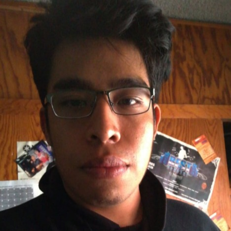
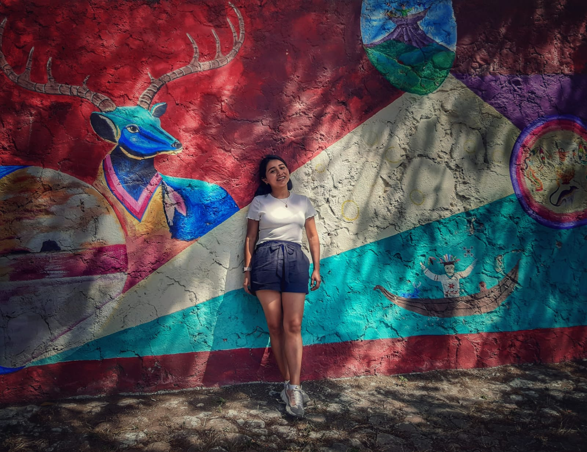
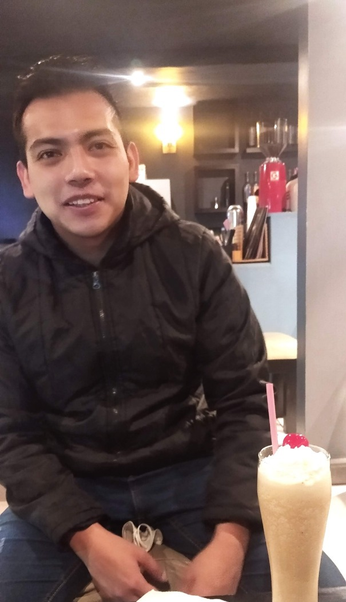

Angeles Rios
Tengo 29 años, soy ingeniera quimico industria con especialidad en Análisis instrumental,Nací en CdMx, vivo en Neza Edomex, me encanta comer jajaja soy alergica al ácido acetilsalicílico (aspirina, alk-serser,etc),soy muy tranquila pero tengo mi genio, me gusta ayudar a los demás,mi forma de demostrar amor a alguien mas es cocinandole algo ,soy muy cuidadosa con la ortografia, tengo mi lado romántico me gusta leer poesía.Al principio soy muy callada pero ya en confianza llego a artar
-
Comidas favoritas:
- Tacos de suadero
- Algún cortesito de carne XD
- Pancito de dulce
- Agua de Jarabe de palo
- The One That Got AwayThe one :Katy Perry
- Mi vida -version DLD
- Spider-Man 2019: Into the Spider-Verse
- Her 2013
- Comer,amar y rezar 2010
Canciones favoritas:
Peliculas favoritas:

linkedin
github
Jonathan
Tengo 25 años, soy un entusiasta de la tecnología y la programación lo que mas me gusta es aprender un nuevo lenguaje de programación, nuevos frameworks he roto tantas veces linux :P lo que mas me gusta es cuando me equivoco y aprendo de eso si puedo ayudar a alguien lo lo voy a hacer
-
Comidas favoritas:
- Lasaña
- Pechugas rellenas
- tacos
- relient k- when i go down
- Shawn Mendes - 𝐓𝐡𝐞𝐫𝐞`𝐬 𝐍𝐨𝐭𝐡𝐢𝐧𝐠 𝐇𝐨𝐥𝐝𝐢𝐧 𝐌𝐞 𝐛𝐚𝐜𝐤
- Dead Inside- Skillet
- Battle shift
- Un fantasma en el sistema
- Mi vecino totoro
Canciones favoritas:
Peliculas favoritas:

linkedin
github
Norma
Tengo 25 años. Estudié la licenciatura en Nutrición y Ciencias de Alimentos y un diplomado en Liderazgo Ignaciano. Nací en Palenque, Chiapas y actualmente estoy viviendo en Guadalajara. Me considero una persona tranquila y risueña. Me gusta realizar voluntariados y visitar pueblos magicos.
-
Comidas favoritas:
- Ramen
- Chilaquiles
- tacos
- All too well- Taylor Swift
- Easy On Me- Adele
- Rosas- Oreja de Van Gogh.
- Fragmentos de una mujer
- Ocho apellidos Vascos
- Pasante de moda.
Canciones favoritas:
Peliculas favoritas:

linkedin
github
Arturo
Tengo 26 años, estudie Ingenieria en Sistemas Computacionales,naci en cdmx pero actualmente vivo en Valle de chalco edo mex,muy amigable, bastante fiestero pero responsable,en confianza soy muy platicador,me gusta mucho comer alitas,muy relajado, casi no me enojo Fan de Linkin park desde los 13 años actualmente me esta gustando la musica Kpop todas las noches como pan por que si no me pongo de malas.
-
Comidas favoritas:
- Pechugas empanizadas.
- Alitas
- Arroz
- Talking to my self- linkin park
- Monster- exo
- psycho- Red velvet
- Terror bajo la tierra O TREMORS
- REC
- 28 semanas despues
Canciones favoritas:
Peliculas favoritas: